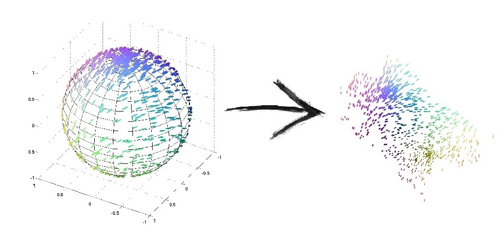
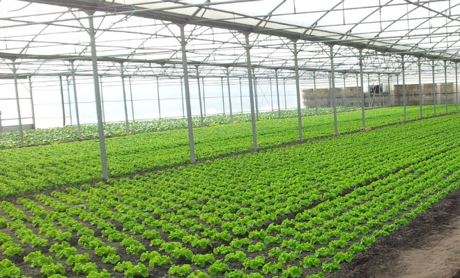

le projet
quel est notre objectif ? comment ça fonctionne ?
Lors de notre première année de master, un travail encadré de recherche nous a
été assigné.
L'objectif
de ce projet est de concevoir une architecture capable de traiter un vaste ensemble de données d'images et
de les transformer afin de faire apparaître, ou non, des relations entre elles. Pour traîter les images,
nous avons utilisé des outils étudiés en cours comme la réduction de dimensions et le deep learning.

applications potentielles

comment cela pourrait aider ?
Les applications potentielles de cet outil sont multiples et pourraient s'appliquer à de nombreux domaines:
- Astronomie : tri rapide des images pour faciliter les analyses.
- Agriculture : surveillance de la santé des cultures via des caméras.
- Art : analyse des peintures et détection des contrefaçons.
- Médecine : diagnostic rapide à partir d'images médicales.
- Environnement : surveillance via l'analyse d'images satellites.
- Industrie : amélioration du contrôle qualité.
- Transport : optimisation des systèmes de conduite autonome.
- Archéologie : détection de structures enfouies via images aériennes et données LiDAR.
l'équipe
qui sommes-nous ?
Nous sommes un groupe de cinq étudiants du Master MIASHS (mathématiques et
informatique appliquées aux sciences humaines et sociales), une formation spécialisée en data science à
Montpellier.
Notre équipe est constituée de profils variés,
incluant des étudiants en reprise d'études, des personnes en réorientation et d'autres poursuivant simplement
leur cursus.
Elle a pour objectif d'acquérir un ensemble solide de compétences afin de contribuer au
développement d'intelligences artificielles innovantes.